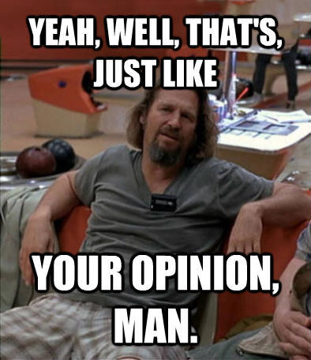
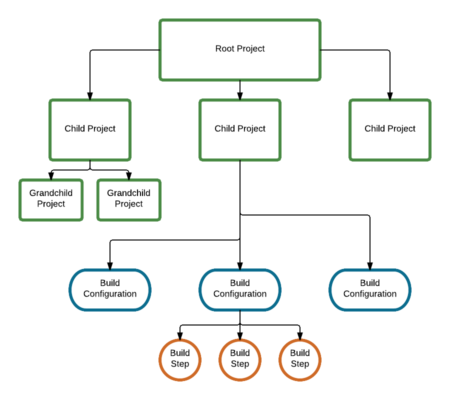
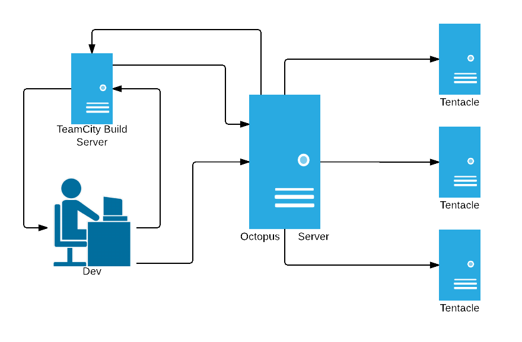
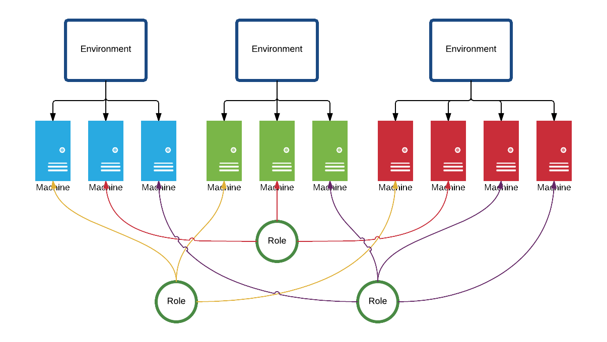

TeamCity
-- and --
Octopus Deploy
Automated Builds and Deployment
Matt Ash | @ashmatthew | The Beard
Without the fine work of these folks, none of this would be possible
TeamCity by JetBrains
Octopus Deploy by Octopus Deploy
Me
- Matt Ash
- I hate shaving
- I like writing code
- I really like automating its build and deployment process
- @ashmatthew
What this is not
- Full examination of TeamCity
- Full examination of Octopus Deploy
- Comparison with other build automation tools
- A lesson in organizing
What this is!
A highlight of features from both products that I believe are essential

What else this is!
A little knowledge, and a little confidence
...and maybe a little Big Lebowski humor because come on...seriously, Big Lebowski
Hopefully you're at least a little familiar with...
- NuGet
- Standard Structure of WebApps as served by IIS
- Web.Config transformations
- TeamCity and Octopus Deploy logos
- The Big Lebowski
Expected Results
A TeamCity Project that
- Resolves NuGet dependencies
- Compiles a solution
- Runs automated tests
- Creates an Octopus deployable NuGet package
An Octopus Project that
- Downloads a NuGet package from TeamCity
- Creates a release
- Deploys a release to various environments
- Updates configuration variables per environment
Presentation Notes
- Text in this color means you can hover over it for a reminder of what "this" is (and you don't even need to call .bind() on it)
- Logos - slides with both logos pertain to both, slides with 1 logo pertain to just that product

Ok, Let's do this!
TeamCity
Basic Concepts
Basic Concepts
Build Server vs. Build Agents
Basic Concepts

Basic Concepts
Projects
- Typically tied to a solution (.sln)
- Contains child projects -- and/or -- build configurations
- They are what appears on your home screen
Basic Concepts
Project > Build Configurations
- High level container for your build process
- Contains build steps
- Can have dependencies or be another configuration's dependent configuration (we'll get to dependencies)
Basic Concepts
... > Build Configurations > Build Steps
- Task for a build agent to execute
- Contains build steps
- Can have dependencies or be another confiugrations dependent configuration
Basic Concepts
VCS Roots
- Version Control System
- Checkout rules
- Pending changes
TeamCity
"Advanced" Concepts

"Advanced" Concepts
Triggers
- Mechanisms for automating the start the execution of a build configuration
- VCS
- Finish Build
- Schedule
- and many others...
"Advanced" Concepts
Variables
- Can scope to system, project, or build configuration
"Advanced" Concepts
Dependencies
- Snapshot
- Ensures contiuity of resources between build configurations
- Artifact
- Requires artifacts are generated before proceeding
"Advanced" Concepts
Artifacts
This is what a build configuration produces. For this demo, NuGet packages that are hosted on the TeamCity NuGet repository
"Advanced" Concepts
Build Features
- VCS Labeling
- Symbol File Indexer - Greg taught us some cool stuff with symbol files a number of months ago that would be helpful here
- and many more...
"Advanced" Concepts
Plugins
- Outside of projects, build configurations or build steps
- Octopack (we'll come back to this)
- Refer to TeamCity Wiki
Okay, time to roll our way into the semis
Octopus Deploy
Basic Concepts
Basic Concepts
Octopus Server vs. Tentacles

Basic Concepts
